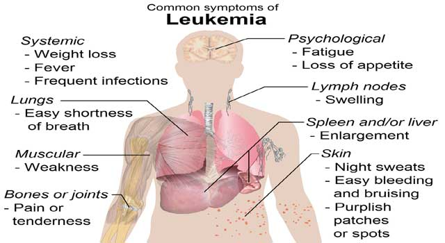

Once a blood disorder is suspected, blood and bone marrow tests usually are performed to rule out leukemia. In some cases, additional tissue samples may be needed to confirm the diagnosis or help develop a treatment plan.
To diagnose leukemia, a number of blood tests are performed. These tests are used to evaluate the type and quantity of blood cells that are present, the blood chemistry, and other factors. Full blood count is used to establish the numbers of different blood cell types in the circulation. A low number of red or white blood cells is described as anemia or leukopenia, respectively. A low number of "young" red blood cells (reticulocytes) is called reticulocytopenia. A high leukocyte or reticulocyte count is called leukocytosis or reticulocytosis. A lack of mature neutrophils (bacteria-destroying white blood cells) is known as neutropenia or granulocytopenia. Thrombocytopenia is the term used for a low number of blood-clotting platelets, and thrombocytosis refers to a high number of platelets.
Differential blood count (DBC) is used to determine the relative proportion of blood cell types within the bloodstream. In particular, the percentage of immature leukemic "blast" cells is noted. People with acute leukemia (either acute lymphocytic leukemia [ALL] or acute myelogenous leukemia [AML]) often have too many leukocytes (white blood cells), too few erythrocytes (red blood cells) and/or too few platelets. In many of these patients, the leukocytes are immature "blast" cells.
Hematocrit assay is used to determine the proportion of the blood that is occupied by erythrocytes (red blood cells). In adult men, normal is about 46% (39.8–52.2) and in adult women, it is about 40.9% (34.9–46.9). In the hemoglobin level test, the level of oxygen-carrying pigment in the erythrocytes is measured. In men, normal levels are 15.5 g/dL blood (13.3–17.7) and in women, normal levels are 13.7 g/dL blood (11.7–15.7). Blood coagulation variables are used to determine whether there are problems with clotting. These variables include prothrombin time, partial prothrombin time (PPT), clotting time, coagulation factors II, V, VII, IX, X, XI, and XII, plasminogen, and plasminogen activator. Blood morphology and staining is used to identify abnormalities in cell shape, structure, and the condition of the cell nucleus. Some abnormalities common to red blood cells include anisocytosis (excessive variations in size), poikilocytosis (abnormal red blood cell shapes), and macrocytosis (abnormally large cells). Neutrophils often show nuclear and cell-based abnormalities, as well as loss of granulation. Platelets may show giant forms that are deficient in granules.
In blood chemistry tests, the type and amount of enzymes, minerals, and other substances within the blood are measured. Typical tests include measuring the serum enzyme lactic dehydrogenase; measuring the leukocyte enzyme alkaline phophatase, especially for the diagnosis of chronic myelogenous leukemia, or CML; measuring serum vitamin B12, which can be increased to roughly 15 times normal in CML patients; and measuring serum levels of calcium, potassium, phosphate, and uric acid (excess uric acid in the blood, or hyperuricemia, is common in lymphocytic leukemia and lymphoma). These tests are used to identify kidney or liver damage that may be caused by leukemic cell breakdown or by drugs used for chemotherapy.